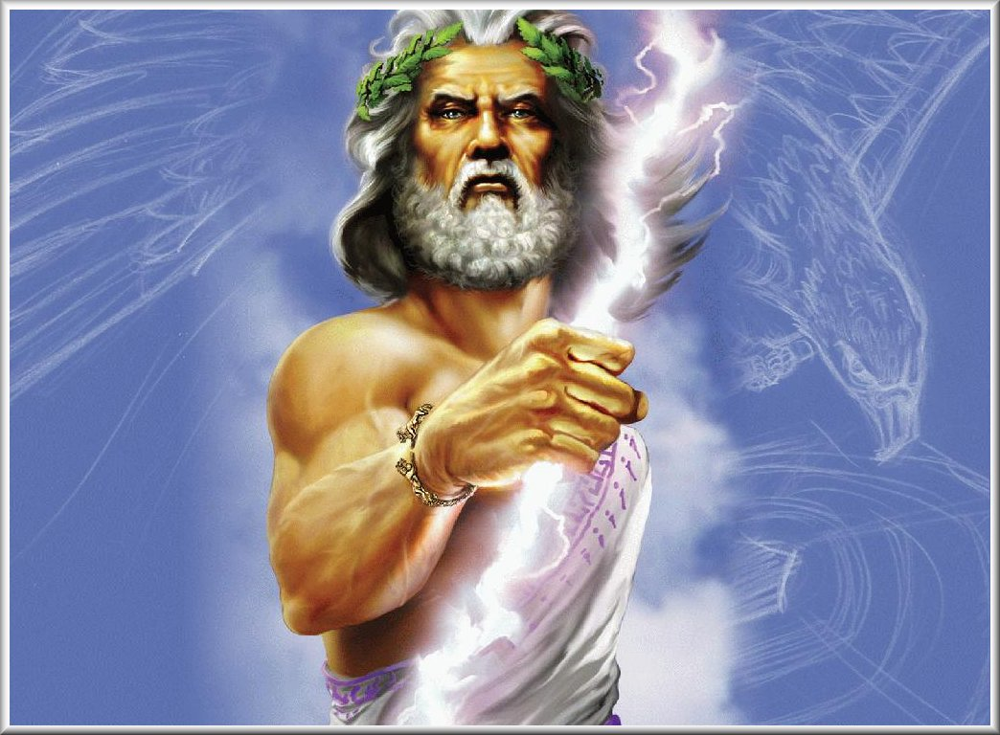

Zeus is the god of the sky, lightning and the thunder in Ancient Greek religion and legends, and ruler of all the gods on Mount Olympus. Zeus is the sixth child of Cronos and Rhea, king and queen of the Titans. His father, Cronos, swallowed his children as soon as they were born for fear of a prophecy which foretold that one of them would overthrow him. When Zeus was born, Rhea hid him in a cave on Mount Ida in Crete, giving Cronos a stone wrapped in swaddling clothes to swallow instead. When Zeus was older he went to free his brothers and sisters; together with their allies, the Hekatonkheires and the Elder Cyclopes, Zeus and his siblings fought against the Titans in a ten-year war known as the Titanomachy. At the end of the war, Zeus took Kronos' scythe and cut him into pieces, throwing his remains into Tartarus. He then became the king of gods.